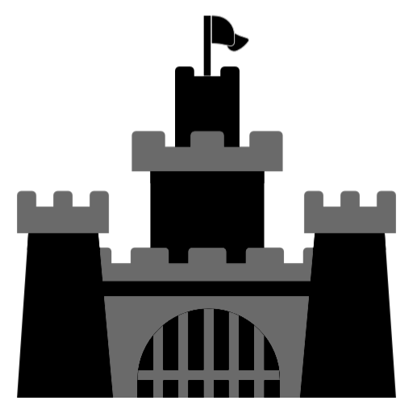

Accès au château :
Le château du Haut-Koenigsbourg est situé à 26 km au nord de Colmar, 55 km au sud de Strasbourg et 12 km à l'ouest de Sélestat. Autoroute A35 sortie 17 via Kintzheim.
Adresse :
Château du Haut-Koenigsbourg 67600 Orschwiller, Alsace,France Téléphone : +33 (0)3 69 33 25 00 Fax : + 33 (0)3 69 33 25 01.
La taverne du Haut-Koenigsbourg :
Un espace de restauration est installé au bastion en étoile, à l'entrée du château. Avec près d'une centaine de places, la Taverne du Haut-Kœnigsbourg vous propose d'y déguster de la cuisine alsacienne ou médiéval.